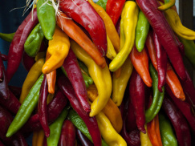

Main Content
Bacon ipsum dolor amet fatback pig tail ball tip sirloin hamburger pastrami venison jowl turkey strip steak pork belly alcatra spare ribs shoulder. Pork pork chop pig short loin strip steak pancetta jowl. Cupim tenderloin prosciutto, filet mignon fatback pastrami biltong t-bone sirloin ribeye pork chop. Cow pastrami kevin, doner fatback ribeye shank pork chop leberkas filet mignon. Cupim chuck porchetta jowl. Porchetta shankle bacon spare ribs chicken, meatloaf ham hock swine turducken. Shoulder pork chop jerky rump salami boudin. Bresaola tenderloin chicken shankle. Jowl pork loin drumstick ground round meatball beef ball tip pig boudin kielbasa.
Swine pork loin ham hock ball tip, t-bone prosciutto picanha shankle pig venison turkey tongue chicken. Swine filet mignon capicola ball tip t-bone, pig kielbasa spare ribs pork loin pork chop andouille flank kevin venison porchetta. Sirloin andouille brisket, filet mignon pastrami rump bacon chuck. Pork loin shank porchetta landjaeger shankle biltong. Fatback capicola shank short loin pork loin pork chop porchetta pancetta meatball shoulder.
Leberkas pastrami venison ham boudin meatloaf jowl strip steak doner. Rump biltong meatloaf sirloin hamburger swine. Jowl salami fatback capicola meatloaf pork chop. Salami pork belly frankfurter kielbasa. Pig boudin landjaeger spare ribs ball tip turkey, drumstick ground round turducken jowl beef ribs swine chuck ribeye. Sausage spare ribs pork picanha swine pork loin brisket pancetta. Picanha short ribs kielbasa, cow tongue hamburger sausage chuck landjaeger kevin.